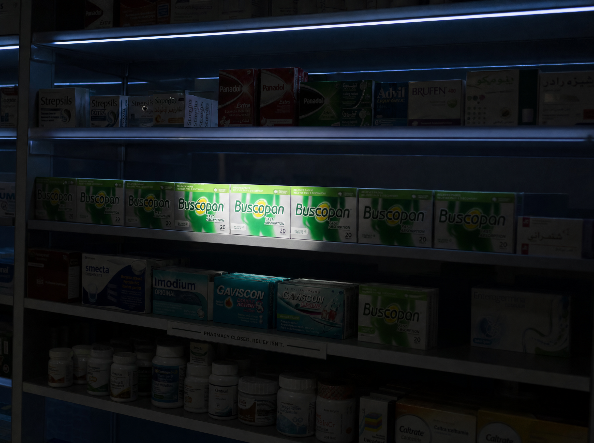

Retail anchor · 240 UAE pharmacies
The shelf that points to your phone
From 22:00, a single LED strip lights only the Buscopan row. A vinyl sticker on the shelf base reads "Closing? We're not." with a QR straight to the Noon Daily / Talabat order link, prefilled.
240 night-shift pharmacies · 60-day pilot